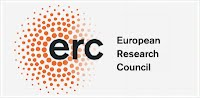
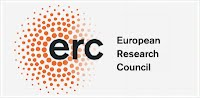
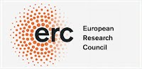
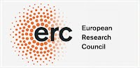
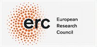

Meeting before the conference:
2 September (Sunday), Hotel Barceló Nervion, 20:45
Later we go to the restaurant La Deliciosa
Conference poster
List of participants
Program
Accommodation
Conference Dinner
Photos
Reimbursement
Funding:

ERC Staring Grant GEDENTQOPT
CHIST-ERA QUASAR ENFOQI
Former QED conferences:
QED2 (Siegen)
QED1 (Bilbao)
  
 